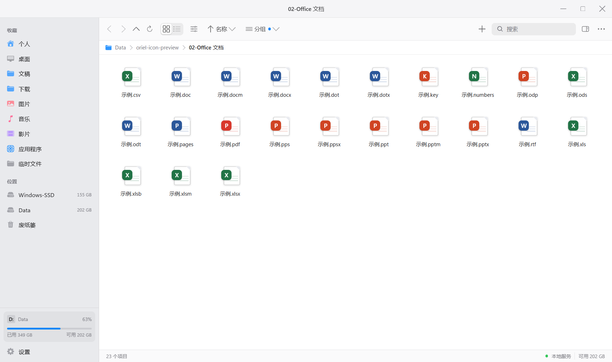
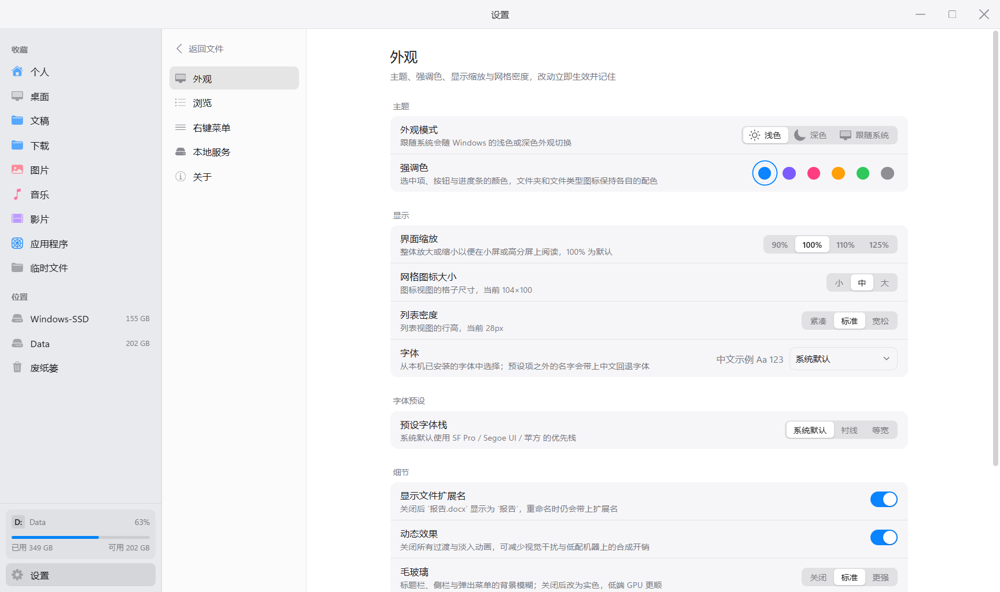
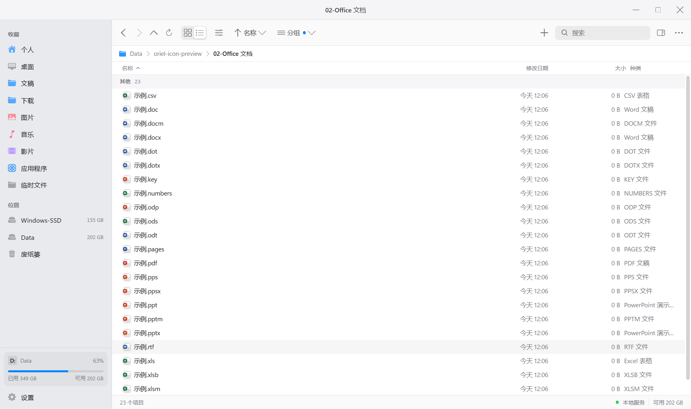
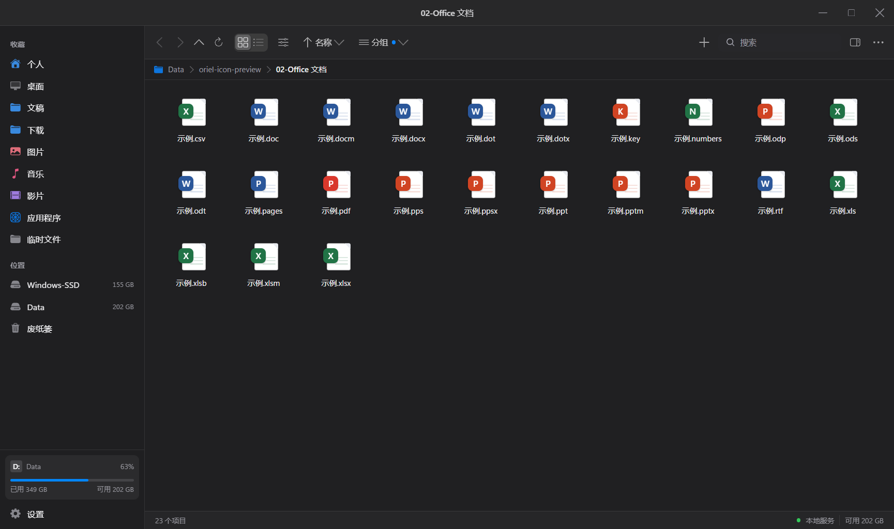

图标系统
397 个扩展名、25 个特殊文件名，加上 Office / PDF / 可执行文件的系统图标。 列表视图缩到 18px 时角标自动降级成一个字母，不会糊成一团。
网格、图标、右键菜单、批量重命名，都按 Finder 的习惯来。 界面跑在 Tauri 里，文件操作走本机的 REST 服务，没有一个字节离开这台电脑。

网格视图 · 397 个扩展名各有自己的图标，Office 与 PDF 用系统真实图标
功能
不是把 Windows 资源管理器换层皮。工具栏、设置、右键菜单、弹窗都按 Finder 和系统设置的形状重画过。
397 个扩展名、25 个特殊文件名，加上 Office / PDF / 可执行文件的系统图标。 列表视图缩到 18px 时角标自动降级成一个字母，不会糊成一团。
查找替换（可选正则）、编号、添加文本、大小写，四步叠成一个配方。 右侧实时预览「原名 → 新名」，重名和非法字符当场标红。
F2识别 7-Zip，把 zip / 7z / rar 当成只读目录： 可以进子目录、看大小、直接解压某几项，不用先解压整包。
深度优先遍历，10 秒预算、80 万条目上限， 结果通过 SSE 边搜边推，按 Esc 立刻停，不会把磁盘拖垮。
复制、移动、下载都在服务端队列里跑，按字节报进度， 可以暂停、继续、重试、取消，失败会删掉半成品。
强调色六选一、界面缩放 90–125%、网格与行高、字体、毛玻璃强度， 每个文件夹还各记一份自己的视图与排序。
重命名
重命名弹窗分两栏：左边是文件本身，右边名称和扩展名分开写。 批量模式下换成配方式面板，先把计划看完再点应用。

设置
左栏分类，右栏分组卡片，行与行之间是发丝线。 开关、分段控件、复选框都是自绘的 macOS 控件，开启时整条跑道变成强调色。

列表
按名称、种类、日期、大小分组，滚动时分组头吸在顶部； 大小列会真正去算文件夹的递归体积，进视口才算，不会卡住界面。

深色
深色不是把白色反相：分组卡、发丝线、开关、图标阴影都单独调过， 强调色和毛玻璃在暗色下仍然清楚。

怎么搭的
Rust 负责窗口、系统菜单、属性对话框这些必须原生的事情； 文件读写、搜索、压缩、缩略图都在本机 8787 的 Fastify 服务里， 界面通过 REST 和 SSE 跟它说话。所以同一份界面也能在浏览器里跑。